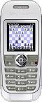

|  |
MICC
Mobile Internet Chess Client Main page |
|
MICC
is an internet chess client written for mobile devices
supporting the Java MIDP 2.0 platform. The current version of
MICC is 1.0 and supports playing onthe Free Internet Chess Server (FICS). Later versions of MICC will support the Internet Chess Club (ICC). Go to the Download section and download the MICC.jad and MICC.jar files for installation on your mobile device. Also read the Help section to learn how to use MICC and find out about its features and supported functions. Enjoy! |
News060925 Pages initiated |